2018年元月5日，《最强大脑》第五季开幕！第一期第一轮就展开了百人大战，竞赛项目是“数字华容道”。
在分成16个小方格的盒子里装着15块标有数字的小方块，还留下一个空格。按任意顺序把小方块放进盒子里，空格确定在右下角。要求通过移动，把它们按照自然顺序一一排好。图1-1是初始状态的一个例子，图1-2是要求达到的终局状态。
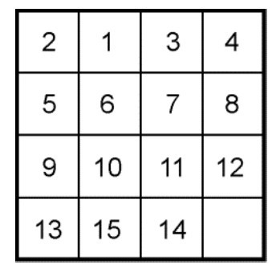
图1-1
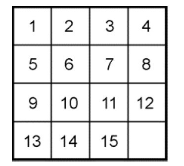
图1-2
在同一初始状态下，百位选手展开了激烈的角逐，最先完成并正确无误的选手得以晋级。
数字华容道又名重排十五，是一个流传已久的单人智力游戏。这款游戏有两个基本问题：一是如何去解，二是是否一定有解。
这个游戏的主流玩法是降阶法（如图1-3所示），先还原1,2,3,4,5,9,13这7枚棋子，把它们分别安置在第一行和第一列上。
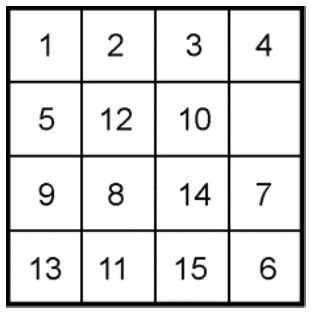
图1-3
第二步是把6,7,8,10,14这5枚棋子安置在第二行和第二列的自然顺序位置上（如图1-4所示）。
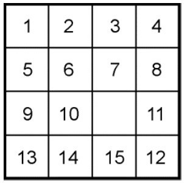
图1-4
现在，只剩下11,12,15这3枚棋子和右下角的1个空格了。这时会出现两种情况，一是11,12,15顺时针排列（不管空格在何处），二是11,12,15逆时针排列（也不管空格在何处）。如果是第一种情况，那么最多再走两步就可以到达终局了，如图1-5所示。如果是第二种情况，则对不起，你摊上大事了！即使你让临近的10、14两枚棋子一起参与进来，想尽法子，到何年何月也不可能达到终局。
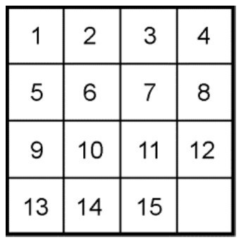
图1-5
下面用数学方法回答：重排十五什么时候是可解的，什么时候是不可解的。先看下面几个定义。
定义1：由1,2,…,n组成的一个有序数组称为一个n级排列。
例如，2431是一个四级排列，45321是一个五级排列。
定义2：在一个排列中，如果一对数的前后位置与大小顺序相反，即前面的数大于后面的数，那么它们就称为一个逆序。一个排列中逆序的总数就称为这个排列的逆序数。
例如2431中，21,43,41,31是逆序，2431的逆序数就是4；类似地，45321的逆序数是9。
定义3：逆序数为奇数的排列称为奇排列，相应地，逆序数为偶数的排列称为偶排列。
显然，任一排列都只有这两种可能。
现在回到重排十五上来，15枚棋子放在16个空格中。按从左到右、从上到下的顺序（空格不计）排成一列，因此也构成了一个排列，如图1-6所示的初局。如果写成排列的话就是
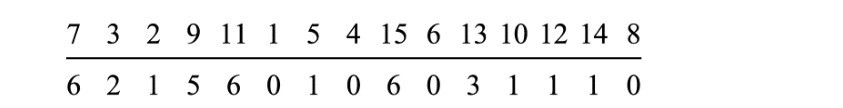
横线以下是对应数字的逆序数。例如7，在此排列中有3,2,1,5,4,6这6个数比它小，所以7的逆序数是6；又如5，在它之后仅有4比它小，所以5的逆序数就是1，以此类推。在判断这个排列是哪一类排列时，不必把这15个逆序数加起来，只需数一数有多少个奇数就可以了。在本例中，共有7个奇逆序数，所以它是一个奇排列。
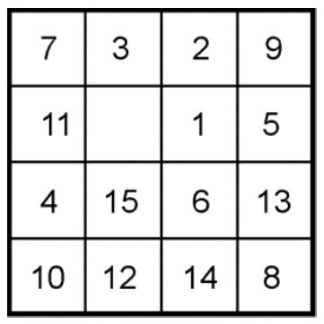
图1-6
以下我们要研究棋子的移动对于排列种类的影响。棋子左右移动，排列的奇偶性不受影响；而上下移动的话，奇偶性将要发生变化。如图1-7所示，棋子丁向上面的空格移动，则由原来的排列“×甲乙丙丁××”变成了排列“×丁甲乙丙××”，也就是说丁跳过甲乙丙而成了新的排列。由此所导致的排列种类的变化很容易看出来，因为丁一次性跳过甲乙丙可以看作先跳过丙、再跳过乙、最后跳过甲的三级跳。每跳一次，就有一个新的逆序产生，或一个旧的逆序消失。无论是哪种情况，每跳动一次的结果总是逆序数加1或减1。即跳动1次，排列的奇偶性变动一次；跳动3次，排列的奇偶性也连变3次。总结起来就是，一个棋子向上移动时，排列的奇偶性发生变化；反之，一个棋子向下移动时，奇偶性当然也要发生变化。
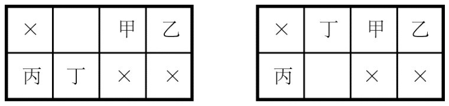
图1-7
现在假定游戏开始了，空格的位置在开始时照例放在棋盘的右下角。不管棋子移动多少次，空格的位置依旧在右下角才有可能达到终局。这样空格上移的次数必定与下移的次数相同，因此排列的奇偶性一定经过偶数次的变化，所以移动开始时初始排列的奇偶性必与其移动终了后的奇偶性是一样的。换言之，偶排列仍回到偶排列，而奇排列仍回到奇排列。但我们终局的要求是1,2,3,4,…,14,15的排列，逆序数为0，是个偶排列，这样我们就得到了一个重要结论：
初始开局是奇排列的重排十五一定无解，只有初始开局是偶排列的，才能有完美的终局。
在随机放置15枚棋子时，有多少情况是无解的呢？在一个n级排列中，排列总数是n！设全部的n级排列中有s个奇排列，t个偶排列。现将s个奇排列中的前两个数对换，得到s个不同的偶排列，因此s≤t。同样可证t≤s，于是s=t，即奇、偶排列的总数相等，各有n！/2个。所以，若15枚棋子随机放置的话，就可能有一半是无解的。
任何游戏之所以有趣，是因为无数次摸索尝试后，突然成功的那一刻的兴奋。现在，通过数学上的排列论，可以事先预测其结果，于是一个有趣的游戏变得兴味索然了。有人说这是数学的缺点，但换个角度看，这正是数学的伟大。数学大的功用在于解释宇宙的奥秘，发掘真理，最后使得人类能充分利用这千变万化的宇宙现象；小的妙处就像我们可以用排列组合解决重排十五的问题一样。
最后有一点要声明：游戏终局时，空格的位置必须与初始状态一样在右下角，否则以上讨论的问题就完全改变了。
历史上曾发生过一段有趣的故事。美国科学魔术师萨姆·洛伊德在1878年推出了一款著名的“14～15”智力玩具，这个游戏迅速风靡欧美大陆。在德国的马路上、工厂里、皇宫中、国会大厦，到处都有人在如痴如醉地玩这个游戏，以致许多工厂老板不得不出示公告，禁止人们在上班时玩游戏，否则开除！在法国，从比利牛斯山脉到诺曼底半岛的小山村和巴黎的林荫大道，也是处处可见玩这个游戏的人群。这个玩具在出售时的初始布局如图1-8所示，玩具的制作者洛伊德承诺，谁能够通过滑动其中的数块使错位的14和15换成正常次序，谁就能获得1000美元的奖金。1000美元可不是一个小数目，自然会引起轰动。事实上，这是永远无法达到的，只是洛伊德的一个“诡计”，因为这正是一个奇排列。
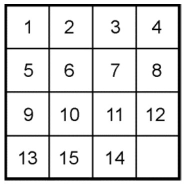
图1-8
但从图1-8所示的初始布局，还是可以得到一些有趣的终局。如图1-9所示，即把数字1～15的次序理顺，但空格不在右下角，而在左上角。目前已知这个玩法的最少步数是44步，如下所示：
14,11,12,8,7；6,10,12,8,7；4,3,6,4,7；14,11,15,13,9；12,8,4,10,8；4,14,11,15,13；9,12,4,8,5；4,8,9,13,14；10,6,2,1。
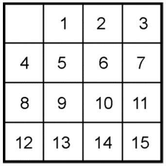
图1-9
在分成9个小方格的盒子里，将1～8这8个数字任意安排，余下一个空格，与空格上、下、左、右相邻的数字可以移动。要求最后的数字从1至8按顺序排好，空格居于右下角。如图1-10所示，这就是重排九宫游戏。
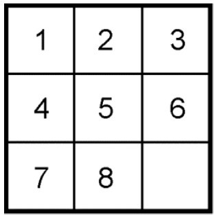
图1-10
重排九宫是否有解？其准则和重排十五是一致的。在重排九宫有解的情况下，人们又欲寻找以最少的步数完成从初始状态到终局状态的转换。这是相当有难度的问题，例如求欲使图1-11中的数排成图1-10的顺序，其最少步数是多少？
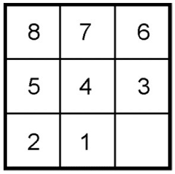
图1-11
19世纪，英国趣味数学家杜丹尼找到一种36步的解答方法：12543， 12376，12376，12375，48123，65765，84785，6。该方法长期以来被认为是最佳答案，没有人提出质疑。直到后来借助于电子计算机，一下子找到10种30步的解答方法，才打破了杜丹尼的记录。这些解法如下：
① 12587，43125，87431，63152，65287，41256；
② 14587，53653，41653，41287，41287，41256；
③ 14314，25873，16312，58712，54654，87456；
④ 12587，48528，31825，74316，31257，41258；
⑤ 14785，24786，38652，47186，17415，21478；
⑥ 34785，21743，74863，86521，47865，21478；
⑦ 34785，21785，21785，64385，64364，21458；
⑧ 34521，54354，78214，78638，62147，58658；
⑨ 34521，57643，57682，17684，35684，21456；
⑩ 34587，51346，51328，71324，65324，87456。
华容道游戏与重排九宫和重排十五类似，属于滑块类游戏。标准华容道是4×5的长方形棋盘，共有10枚棋子。其中，最大的一块是2×2，代表曹操；2×1的有5块，4块竖排的分别代表张飞、赵云、黄忠和马超，一块横排的代表关羽；还有4块1×1的代表卒。此外，盘面还空出2个单位面积，作为游戏时的滑动之路。游戏要求滑动棋子，使曹操移动到下端正中间的开口处逃脱（如图1-12所示）。这个故事来源于中国古代的文学名著《三国演义》。
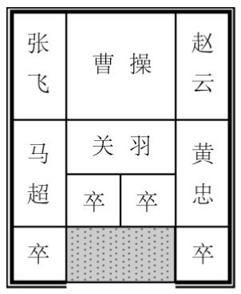
图1-12
图1-12所示的是典型的“横刀立马”开局，研究其解法的最小步数长期是热点问题。1964年，美国马丁·加德纳在《科学美国人》上公布了81步的解法。后来经过计算机的验证，确认这是最少步数解。
为了介绍这个最少步数解，我们采用“横刀立马”开局式，然后以10个数字代表10个滑块（如图1-13所示）。
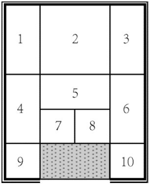
图1-13
解法如下，加下划线的表示只走半程（这里要解释一下“半程”的意思，如棋子9，它的右面有两个空格，“全程”是指9移到8的下面，而“半程”是指9移到7的下面）。
9,8,4,5,6；10,8,6,5,7；9,6,10,5,9；7,4,6,10,8；5,7,6,4,1；2,3,9,7,6；3,2,1,4,8；10,5,3,6,8；2,9,7,8,6；3,10,2,9,1；4,2,9,7,8；6,3,10,9,2；4,1,8,7,6；3,2,7,8,1；4,7,5,9,10；2,8,7,5,10；2。
在对华容道的典型开局式——“横刀立马”的解法进行介绍之后，让我们来讨论一下华容道的开局式问题。
造成华容道开局式多样性的原因是它有5个矩形块，矩形块可以横放，也可以竖放。可以只让一个横放，其他4个竖放；也可以只让一个竖放，其他4个横放；或者取其他组合，甚至让5个都横放。只有让5个都竖放是不可取的。根据有几个矩形块横放，开局式可分一横式、二横式、三横式、四横式、五横式共5大类。在每一大类中，除了五横式只有一种布局外，其他大类每个又都有多种可能的开局式。我国华容道专家齐尧教授（原北京工业学院副院长）曾总结、提炼出180种开局式。
我们对开局式有下列约定俗成的规定：①一般都把曹操置于上方中央；②如果某一种布局是另一布局经移动若干棋子后形成的，则不认为它是一种合格的开局式，也就是说两种开局式原则上是“不互通的”；③对矩形块和小方块则要求它们布置得较有规律，使留下的空格对棋盘的纵轴是对称的。
不是所有的开局式都能解开，除了五竖式明显不可解、五横式只有一种开局式且可解以外，从一横式到四横式都有一些不能解的开局式。什么样的开局式可解？什么样的开局式不可解？有多少开局式可解？有多少开局式不可解？至今仍无人能明确回答，不像“重排九宫”和“重排十五”那样，可根据其排列的奇偶性判定。图1-14到图1-18是一些开局式的例子。
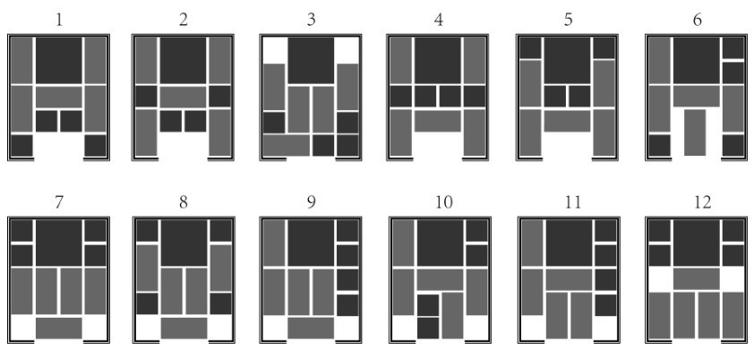
图1-14 一横类开局式
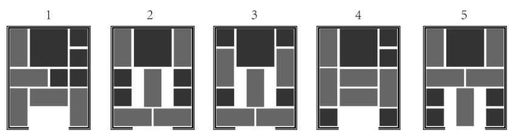
图1-15 二横类开局式
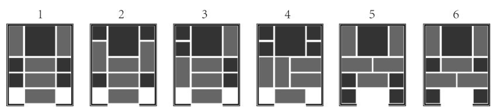
图1-16 三横类开局式
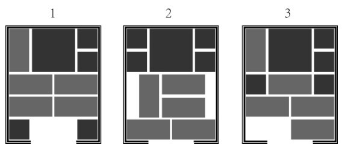
图1-17 四横类开局式
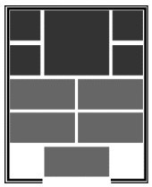
图1-18 五横类开局式